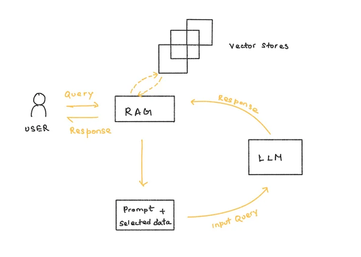

Retrieval‑Augmented Generation (RAG)
AI Systems
Sep 07, 2025
Large Language Models are great at sounding confident. Unfortunately, confidence and correctness are not the same thing. RAG exists to teach models a crucial skill most humans learn early: knowing when to say “I don’t know — let me check.”
Why This Matters
LLMs generate responses based on patterns learned during training. That training data is frozen in time, incomplete, and occasionally wrong. When asked about missing or outdated information, models don’t pause — they improvise. That improvisation is what we call hallucination.
In low‑stakes settings, hallucinations are annoying. In production systems, they are expensive.
The Core Idea
Retrieval‑Augmented Generation changes the workflow. Instead of forcing the model to rely only on its internal memory, it allows the model to retrieve relevant information from an external source before generating an answer.
The model stops guessing and starts grounding its responses in data that actually exists — documentation, databases, papers, or live APIs.
How RAG Works
1. Tokenization and Embeddings
Documents and user queries are first tokenized and converted into embeddings — numerical representations that capture semantic meaning. These vectors allow the system to compare ideas, not just keywords.
2. Vector Storage
Embeddings are stored in a vector database designed for similarity search. This database may contain internal docs, research papers, product manuals, or any other trusted source of truth.
3. Retrieval
When a user asks a question, the query is embedded using the same method. The system then searches the vector database for the most relevant chunks of information using similarity metrics such as cosine distance.
4. Augmented Generation
The retrieved context is injected into the model’s prompt. The LLM now generates a response with grounded references instead of guesswork. The output becomes narrower, calmer, and far more reliable.
What This Changes in Practice
RAG systems reduce hallucinations, keep answers up‑to‑date, and allow models to work with private or proprietary knowledge. More importantly, they separate knowledge storage from language generation.
Models stay fluent. Data stays correct. Everyone wins.
Closing Thought
RAG doesn’t make language models smarter. It makes them more honest. And in real systems, honesty scales better than confidence.
Thanks for reading. If this was useful, you’ll probably like the other posts too.